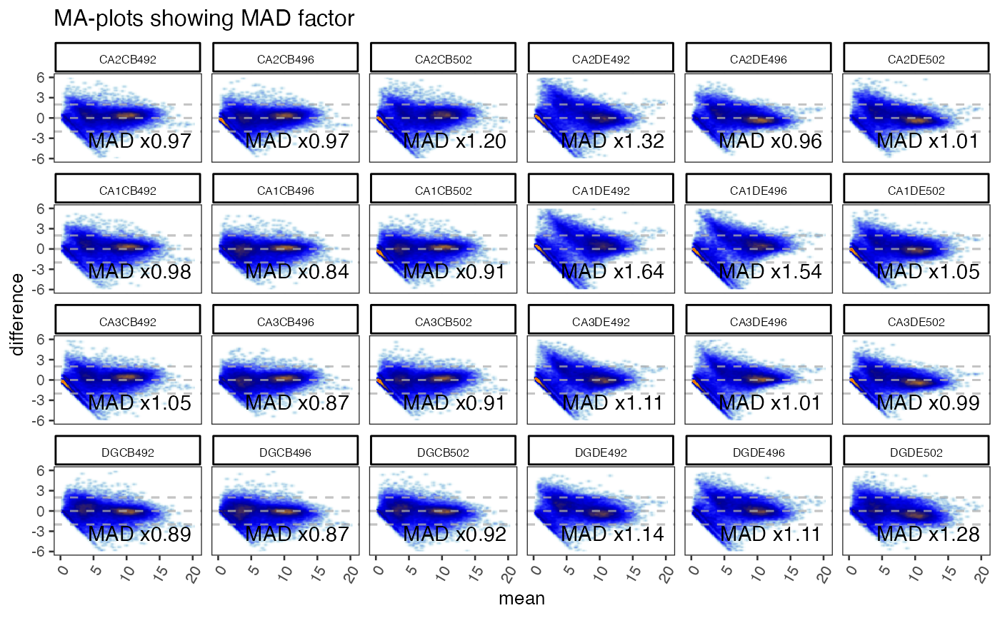
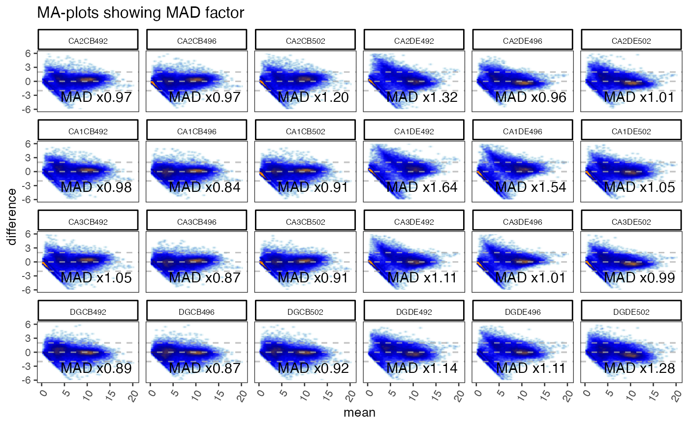

Produce MA-plot of omics data, where jammaplot() uses base R graphics,
ggjammaplot() uses ggplot2 graphics.
ggjammaplot(
x,
nbin_factor = 1,
bw_factor = 1,
assay_name = 1,
useMedian = FALSE,
controlSamples = NULL,
centerGroups = NULL,
colramp = c("transparent", "lightblue", "blue", "navy", "orange", "orangered2"),
groupedX = TRUE,
grouped_mad = TRUE,
outlierMAD = 5,
mad_row_min = 4,
displayMAD = FALSE,
noise_floor = 0,
noise_floor_value = NA,
naValue = NA,
centerFunc = centerGeneData,
whichSamples = NULL,
useRank = FALSE,
titleBoxColor = "lightgoldenrod1",
outlierColor = "lemonchiffon",
fillBackground = TRUE,
maintitle = NULL,
subtitle = NULL,
summary = "mean",
difference = "difference",
transFactor = 0.2,
doPlot = TRUE,
highlightPoints = NULL,
highlightPch = 21,
highlightCex = 1.5,
highlightColor = NULL,
doHighlightLegend = TRUE,
ablineH = c(-2, 0, 2),
base_size = 12,
panel.grid.major.colour = "grey90",
panel.grid.minor.colour = "grey95",
return_type = c("ggplot", "data"),
xlim = NULL,
ylim = c(-6, 6),
ncol = NULL,
nrow = NULL,
blankPlotPos = NULL,
verbose = FALSE,
...
)
jammaplot(
x,
assay_name = NULL,
maintitle = NULL,
titleBoxColor = "#DDBB9977",
subtitleBoxColor = titleBoxColor,
centerGroups = NULL,
controlSamples = colnames(x),
useMedian = FALSE,
useMean = NULL,
ylim = c(-4, 4),
xlim = NULL,
highlightPoints = NULL,
outlierMAD = 5,
outlierRowMin = 5,
displayMAD = FALSE,
groupedMAD = TRUE,
colramp = c("white", "lightblue", "blue", "navy", "orange", "orangered2"),
colrampOutlier = NULL,
outlierColor = "lemonchiffon",
whichSamples = NULL,
maintitleCex = 1.8,
subtitle = NULL,
subtitlePreset = "bottomleft",
titleCexFactor = 1,
titleCex = NULL,
doTitleBox = TRUE,
titleColor = "black",
titleFont = 2,
titlePreset = "top",
xlab = "",
xlabline = 2,
ylab = "",
ylabline = 1.5,
groupSuffix = NULL,
highlightPch = 21,
highlightCex = 1.5,
highlightColor = "#00AAAA66",
doHighlightPolygon = FALSE,
highlightPolygonAlpha = 0.3,
doHighlightLegend = TRUE,
smoothPtCol = "#00000055",
margins = c(3.5, 2, 0.3, 0.2),
useRaster = TRUE,
ncol = NULL,
nrow = NULL,
doPar = TRUE,
las = 2,
groupedX = TRUE,
customFunc = NULL,
filterNA = TRUE,
filterNAreplacement = NA,
filterNeg = TRUE,
noise_floor = 0,
noise_floor_value = NA,
filterFloor = NULL,
filterFloorReplacement = NULL,
transFactor = 0.18,
nrpoints = 0,
smoothScatterFunc = jamba::plotSmoothScatter,
applyRangeCeiling = TRUE,
doTxtplot = FALSE,
ablineV = 0,
ablineH = c(-2, 0, 2),
blankPlotPos = NULL,
fillBackground = TRUE,
useRank = FALSE,
ma_method = c("jammacalc", "old"),
doPlot = TRUE,
verbose = FALSE,
...
)Arguments
- x
numericobject usually amatrixthat contains values with measurement rows, and sample/observation columns. For example, with gene or protein expression data, the genes or proteins (or the assays of genes or proteins) are represented in rows, and obtained samples are represented in columns. Alternativelyxcan beSummarizedExperimentobject, used alongside argumentassay_name.- nbin_factor
numericvalue used to adjust the number of bins used to display the MA-plots, where values higher than1increase the resolution and level of detail, and values below1decrease the resolution. Note the number of bins are already adjusted based upon the square root of the number of plot panels, andnbin_factorapplied to that value.- bw_factor
numericused to adjust the resolution of the 2-dimensional bandwidth calculation, where higher values create more detailed density, and lower values create a smoother density across the range of data.- assay_name
characterused whenxis aSummarizedExperimentobject, to determine which assaymatrixto use for the MA plots. Whenassay_name=NULLthe first assay entry is used, for exampleassays(x)[[1]].- useMedian
logicalindicates whether to center data using themedianvalue, whereuseMedian=FALSEby default. For consistency, this argument is preferred touseMeanwhich is deprecated and will be removed in future. The median is preferred in cases where outliers should not influence the centering. The mean is preferred in cases where the data should visualize data consistent with downstream parametric statistical analysis. When a particular sample is a technical outlier, one option is to definecontrolSamplesto exclude the outlier sample(s), so the data centering will be applied using the non-outlier samples as reference.- controlSamples
charactervector ofcolnames(x)passed tocenterGeneData()which defines the control samples during the data centering step. By default, and the most common practice, MA-plots are calculated across all samples, which effectively uses allcolnames(x)ascontrolSamples. However, it is quite useful sometimes to provide a subset of samples especially if there are known quality samples, to which new samples of unknown quality are being compared.- centerGroups
charactervector of groups passed tojamma::centerGeneData()which determines how data is centered. Each group is centered independently, to enable visual comparisons within each relevant centering group. It is useful to center within batches or within subsets of samples that are not intended to be compared to one another. Another useful alternative is to center by each sample group in order to view the variability among group replicates, which should be much lower than variability across sample groups. SeecenterGeneData()for more specific examples.- colramp
one of several inputs recognized by
jamba::getColorRamp(). It typically recognizes either the name of a color ramp from RColorBrewer, the name of functions from theviridispackage such asviridis::viridis(), or single R colors, or a vector of R colors. When a single color is supplied, a gradient is created from white to that color, where the default base color can be customized withdefaultBaseColor="black"for example.- groupedX
logicalindicating whether the x-axis value, which represents the median or mean value, should be calculated independently for each group whencenterGroupsis used with multiple groups. TypicallygroupedX=TRUEis recommended, however it can be beneficial to share an overall x-axis value in specific circumstances.- grouped_mad
logicalindicating whether the MAD factor calculation of variability among samples should be performed independently for each group whencenterGroupsis used with multiple groups. Typicallygrouped_max=TRUEis recommended, however it can be beneficial to share an overall MAD factor threshold across all samples in specific circumstances.- outlierMAD
numericthreshold above which a MA-plot panel MAD factor is considered an outlier. When a MA-plot panel is considered an outlier, theoutlierColramporoutlierColoris applied to the panel color ramp to display a visual indication.- mad_row_min
numericvalue indicating the minimum x-axis value, calculated using either median or mean as defined by argumentuseMedian, at or above which a measurement is used in the MAD factor calculation. This threshold is useful to restrict the MAD variability calculation to measurements (rows inx) with signal that meets a minimum noise threshold.- displayMAD
logicalindicating whether to display each MA-plot panel MAD factor (median absolute deviation). A MAD value for each panel is calculated by taking the median absolute deviation from zero across all points, using points whose mean value is equal or greater thanoutlierRowMin. The overall MAD is defined by the median MAD from the MA-plot panels. The MAD factor is defined as the ratio of each MA-plot panel MAD value to the overall MAD value, and therefore most MAD factor values should be roughly1. The overall MAD value is defined by the median across all samples whengroupedMAD=FALSE, or defined within eachcenterGroupwhengroupedMAD=TRUE. A value with MAD factor 2 is interpreted as a sample whose median deviation from zero is twice as high as the typical sample, which is a reasonably indication that this sample has twice the inherent level of noise compared to other samples. Note that MAD values should be interpreted within sample processing batches if relevant, or within logical experimental units -- roughly interpreted to mean sets of samples within which direct statistical comparisons are intended to be applied. For example, gene expression data that include brain and liver samples would probably usecenterGroupsfor brain and liver to be centered separately, therefore the MAD factors should be separately calculated for brain and for liver.- noise_floor, noise_floor_value
numericto define a numeric floor, orNULLfor no numeric floor. Values at or belownoise_floorare set tonoise_floor_value, intended for two potential uses:Filter out value below a threshold, so they do not affect centering.
This option is valuable to remove zeros when a zero
0is considered "no measurement observed", typically for count data such as RNA-seq, NanoString, and especially single-cell protocols or other protocols that produce a large number of missing values.One can typically tell whether input data includes zero
0values by the presence of characteristic 45-degree angle lines originating fromx=0angled toward the right. The points along this line are rows with more measurements of zero than non-zero, there this sample has a non-zero value.
Set values at a noise floor to the noise floor, to retain the measurement but minimize the effect during centering to the lowest realiable measurement for the platform technology.
This value may be set to a platform noise floor for something like microarray data where the intensity may be unreliable below a threshold; or
for quantitative PCR measurements where cycle threshold (Ct) values may become unreliable, for example above CT=40 or CT=35. Data is often transformed to abundance with
2 ^ (40 - CT)then log2-transformed for analysis. In this case, to apply anoise_flooreffective for CT=35, one would usenoise_floor=5.
- naValue
characterstring used to convert values ofNAto something else. This argument is useful when a numeric matrix may containNAvalues but would prefer them to be, for example,0.- centerFunc
functionused to supply a custom data centering function. In practice this argument should rarely be changed.- whichSamples
NULLorintegervector, representing an index subset of samples to include in the MA-plots. WhenwhichSamplesrepresents a subset of samples inx, the MA-plot calculations are performed on all samples, then only samples inwhichSamplesare displayed. This argument keeps the MA-plot calculations consistent even when viewing only one or a subset of samples in more detail.- useRank
logicalindicating whether to create column-wide ranks, then create MA-plots using the rank data. WhenuseRank=TRUEthe y-axis represents the rank difference from mean, and the x-axis represents the mean rank. UsinguseRank=TRUEis a good method to evaluate whether data can be normalized, or whether data across samples is inherently noisy.- titleBoxColor
charactervector of R colors, wheretitleBoxColoris equal toncol(x), or wherenames(titleBoxColor)matchescolnames(x). When supplied, each plot panel strip background will be colored accordingly.- outlierColor
characterstring representing one R color, used whencolrampOutlierisNULLand whenoutlierMADis defined. This color is used for MA-plot outlier panels by substituting the first color from thecolrampcolor ramp, to act as a visual cue that the panel represents an outlier.- fillBackground
logicalcurrently used for base R graphics output, and passed tojamba::plotSmoothScatter(), indicating whether to fill the plot panel using the first color in the color ramp for each MA-plot panel, or when a plot panel is an outlier, it usesoutlierColor. This argument is mainly useful to highlight outlier panels, although it is also useful when the color ramp has non-white base color, for exampleviridis::viridis().- maintitle
characterstring with the title displayed above all individual MA-plot panels. It will appear in the top outer margin.- subtitle
NULLorcharactervector to be drawn at the bottom left corner of each plot panel, the location is defined bysubtitlePreset.- transFactor
numericadjustment to the visual density of smooth scatter points. For base R graphics, this argument is passed tojamba::plotSmoothScatter(). The argument value is based upongraphics::smoothScatter()argumenttransformation, which uses defaultfunction(x)x^0.25. ThetransFactoris equivalent to the exponential in the form:function(x)x^transFactor. Lower values make the point density more visually intense, higher values make the point density less visually intense.- doPlot
logicalindicating whether to create plots. WhendoPlot=FALSEonly the MA-plot panel data is returned.- highlightPoints
NULL, orcharactervector, or alistofcharactervectors indicatingrownames(x)to highlight in each MA-plot panel. WhenNULL, no points are highlighted; whencharactervector, points are highlighted in all MA-plot panels; whenlistofcharactervectors, eachcharactervector in the list is highlighted using a unique color inhighlightColor. Points are drawn usinggraphics::points()and colored usinghighlightColor, which can be time-consuming for a large number of highlight points.- highlightCex
numericvalue recycled tolength(highlightPoints)indicating the highlight point size.- highlightColor
charactervector used whenhighlightPointsis defined. It is recycled tolength(highlightPoints)and is applied either to- doHighlightLegend
logicalindicating whether to print a color legend whenhighlightPointsis defined. The legend is displayed in the bottom outer margin of the page usingouter_legend(), and the page is adjusted to add bottom outer margin.- ablineH, ablineV
numericvector indicating position of horizontal and vertical lines in each MA-plot panel.- ylim, xlim
NULLornumericvectorlength=2indicating the y-axis and x-axis ranges, respectively. The values are useful to define consistent dimensions across all panels. The defaultylim=c(-4,4)represents 16-fold up and down range in normal space, and is typically a reasonable starting point for most purposes. Even if numeric values are all between-1.5and1.5, it is still recommended to keep a range in context ofc(-4, 4), to indicate that the observed values are lower than typically observed. Thec(-4, 4)may be adjusted relative to the typical ranges expected for the data. It is sometimes helpful to definexlimslightly above zero for datasets that have an extremely large proportion of zeros, in order to reduce the visual effect of having that much point density at zero, for example withxlim=c(0.001, 20)andapplyRangeCeiling=FALSE.- ncol, nrow
integernumber of MA-plot panel columns and rows passed tographics::par("mfrow")whendoPar=TRUE. When only one value is supplied,nroworncol, the other value is defined byncol(x)andblankPlotPosso all panels can be contained on one page. Whennrowandncolare defined such that multiple pages are produced, each page will be annotated withmaintitleanddoHighlightLegendas relevant.- blankPlotPos
NULLorintegervector indicating plot panel positions to be drawn blank, and therefore skipped. Plot panels are drawn in the exact order ofcolnames(x)received. Blank panel positions are intended to help customize the visual alignment of MA-plot panels. The mechanism is similar toggplot2::facet_wrap()except that blank positions can be manually defined by what makes sense for the experiment design.- verbose
logical indicating whether to print verbose output.
- ...
additional parameters sent to downstream functions,
jamba::plotSmoothScatter,centerGeneData.- useMean
logical(deprecated), useuseMean. This argument indicates whether to center data using themeanvalue. WhenuseMean=NULLthe argumentuseMedianis preferred. For backward compatibility, whenuseMeanis notNULL, thenuseMedianis defined byuseMedian <- !useMean.- outlierRowMin
numericvalue indicating the minimum mean value as displayed on the MA-plot panel x-axis, in order for the row to be included in MAD calculations. This argument is intended to prevent measurements whose mean value is below a noise threshold from being included, therefore only including points whose mean measurement is above noise and represents "typical" variability.- groupedMAD
logicalindicating how the MAD calculation should be performed:groupedMAD=TRUEwill calculate the median MAD and corresponsing MAD factor within eachcenterGroupsgrouping;groupedMAD=FALSEwill calculate one overall median MAD, and corresponding MAD factor values will be performed across all samples.- colrampOutlier
one of several inputs recognized by
jamba::getColorRamp()to define a specific color ramp for MA-plot outlier panels, used whenoutlierMADis defined. WhencolrampOutlierisNULLtheoutlierColoris used.- maintitleCex
numericcex character expansion used to resize themaintitle.- subtitlePreset
character value describing where to position the subtitle, using terms valid in
jamba::coordPresets(). The defaultsubtitlePreset="bottomleft"places the subtitle at the bottom left corner of each plot panel.- doTitleBox
logicalindicating whether to draw plot titles using a colored box. WhendoTitleBox=TRUEthejamba::drawLabels()is called to display a label box at the top of each plot panel, withdrawBox=TRUE. WhendoTitleBox=FALSE,jamba::drawLabels()is called withdrawBox=FALSE.- titleColor
charactervector of colors applied to title text in each MA-plot panel. WhendoTitleBox=TRUEandtitleColorcontains only one or no value, the title color is defined byjamba::setTextContrastColor()along withtitleBoxColor.- titleFont
integerfont compatible withpar("font"). Values are recycled across panels, so each panel can use a custom value if needed.- titlePreset
charactervalue describing where to position the subtitle, using terms valid injamba::coordPresets(). The defaulttitlePreset="top"centers the label at the top of each panel.- xlab, ylab
characterx- and y-axis labels, respectively. The default values are blank""because there are a wide variety of possible labels, and the labels take up more space than is often useful for most MA-plots.- xlabline, ylabline
numericnumber indicating the text line distance from the edge of plot border to placexlabandylabtext, as used bygraphics::title().- groupSuffix
charactertext appended to each MA-plot panel title. This argument is deprecated in favor of usingsubtitleto place additional text at the bottom left corner of each MA-plot panel.- doHighlightPolygon
logicalindicating whether to draw a shaded polygon encompassinghighlightPoints, usinghighlightColor.The polygon is defined bygrDevices::chull()via the functionpoints2polygonHull().- highlightPolygonAlpha
numericvalue indicating alpha transparency, where0is fully transparent, and1is completely not transparent.- smoothPtCol
colorused to draw points whennrpointsis non-zero, which draws points in the extremities of the smooth scatter plot. Seejamba::plotSmoothScatter(). The effect can also be achieved by adjustingtransFactorto a lower value, which increases the visual contrast of individual points in the point density.- margins
numericvector of margins compatible withgraphics::par("mar"). Default values are applied, but provided here for convenience.- useRaster
logicalindicating whether to draw the smooth scatter plot using raster logic,useRaster=TRUEis passed tojamba::plotSmoothScatter(). The defaultTRUEcreates a much smaller plot object by rendering each plot panel as a single raster image instead of rendering individual colored rectangles.- doPar
logicalindicating whether to applygraphics::par("mfrow")to define MA-plot panel rows and columns. WhendoPar=FALSEeach plot panel is rendered without adjusting thegraphics::par("mfrow")setting.- las
integervalue1or2indicating whether axis labels should be parallel or perpendicular to the axes, respectively.- customFunc
NULLorfunctionused instead ofmeanormedianduring the data centering step to generate a row summary statistic. It should takematrixinput, and return anumericvector output summarizing each row inx, to be subtracted from eachnumericvalue by row inx. It is intended to provide custom row statistics, for example geometric mean, or other row summary function.- filterNA, filterNAreplacement
logicalandvectorrespectively. WhenfilterNA=TRUE, allNAvalues are replaced withfilterNAreplacement, which can be helpful to handleNAvalues as zero0for example. In reality,NAvalues should probably be left as-is, so subsequent data centering does not use these values, and so the MA-plot panel does not draw a point when no measurement exists.- filterNeg
logicaldeprecated argument, usefilterFloorinstead. ThefilterNegindicates whether to change all negative values to zero0before proceeding with data centering. Negative values are often the result of measurements being below a noise threshold in upstream data processing, and therefore the magnitude of negative value is usually either not informative, or not on similar scale as positive values. WhenfilterNeg=TRUE, negative values are set to zero, and can result in a characteristic 45 degree angle line originating atx=0extending to the right.- filterFloor, filterFloorReplacement
(deprecated) in favor of
noise_floor, andnoise_floor_replacementrespectively.- nrpoints
integerorNULLindicating the number of points to display on the extremity of the smooth scatter density, passed tojamba::plotSmoothScatter().- smoothScatterFunc
functionused to produce a smooth scatter plot in base R graphics. The defaultjamba::plotSmoothScatter()controls the level of detail in the density calculation, and in the graphical resolution of that density in each plot panel. The custom function should accept argumenttransformationas described intransFactor, even if the argument is not used.- applyRangeCeiling
logicalpassed tojamba::plotSmoothScatter()which determines how to handle points outside the plot x-axis and y-axis range:applyRangeCeiling=TRUEwill place points at the border of the plot, which is helpful to indicate that there are more points outside the viewing range;applyRangeCeiling=FALSEwill crop and remove points outside the viewing range, which is helpful for example when a large number of points are at zero and overwhelm the point density. When there are a large proportion of values at zero, it can be helpful to applyxlim=c(0.01, 20)andapplyRangeCeiling=FALSE.- doTxtplot
logical(not yet implemented injamma), indicating to produce colored ANSI text plot output, for example to a text terminal.- ma_method
character string indicating whether to perform MA-plot calculations using the old method
"old"; or"jammacalc"which uses the functionjammacalc().- titleBoxColor, subtitleBoxColor
charactervector of R colors used as background color for each panel title text, or subtitle text respectively. The subtitle appears in the bottom-left corner, and usually indicates the center groups as defined bycenterGroups.
Value
list of numericmatrix objects, one for each MA-plot,
with colnames "x" and "y". This list is sufficient input
to jammaplot() to re-create the full set of MA-plots.
Details
jammaplot takes a numeric matrix, typically of gene expression data,
and produces an MA-plot (Bland-Altman plot), also known as a
median-difference plot. One panel is created for each column of
data. Within each panel, the x-axis represents the mean or median
expression of each row; the y-axis represents the difference from
mean or median for that column.
By default, the plot uses jamba::plotSmoothScatter(), with optional
highlighted points draw using points().
The function will determine an appropriate layout of plot panels,
which can be overridden using ncol and nrow to specify the
number of columns and rows of plot panels, respectively. For now,
this function uses base R graphics instead of ggplot2, in order
to accomodate some custom features.
This function uses "useRaster=TRUE" by default, which causes
jamba::plotSmoothScatter() to render a rasterized image as opposed
to a composite of colored rectangles. This process substantially
reduces the render time in all cases, and reduces the image size
when saving as PDF or SVG.
Notable features
Highlighting points
Specific points can be highlighted with argument highlightPoints
which can be a vector or named list of vectors, containing rownames(x).
When using a list, point colors are assigned to each element in the
list in order, using the argument highlightColor.
Centering by control samples
Typical MA-plots are "global-centered", which calculates the
mean/median across all columns in x, and this value is subtracted
from each individual value per row.
By specifying controlSamples
the mean/median is calculated using only the colnames(x) which match
controlSamples, thus representing "difference from control."
It may also be useful to center data by known high-quality samples, so the effect of potential outlier samples is avoided.
Centering within subgroups
By specifying centerGroups as a vector of group names,
the centering is calculated within each group of colnames(x).
In this way, subsets of samples can be treated independently in
the MA-plots. A good example might be producing MA-plots for
"kidney" samples, and "muscle" samples, which may have
fundamentally different signal distributions. A good rule
of thumb is to apply centerGroups to represent separate
groups of samples where you do not intend to apply direct
statistical comparisons across those samples, without at
least applying a two-way contrast, a fold change of fold
changes.
Another informative technique is to center by sample group,
for example centerGroups=sample_group.
This technique produces MA-plots that depict the
"difference from group" for each sample replicate of a sample
group, and is very useful for identifying sample replicates
with markedly higher variability to its sample group than
others. In general, the variability within sample group
should be substantially lower than variability across
sample groups. Use displayMAD=TRUE and outlierMAD=2
as a recommended starting point for this technique.
Applying a noise floor
The argument noise_floor provides a numeric lower threshold,
where individual values at or below this threshold are
set to a defined value, defined by argument noise_floor_value.
The default was updated in version 0.0.21.900 to
noise_floor=0 and noise_floor_value=NA.
Values of zero 0 are set to NA and therefore are not included
in the MA-plot calculations. Only points above zero are included
as points in each MA-plot panel.
Another useful alternative is to define noise_floor_value=noise_floor
which sets any measurement at or below the noise_floor to
this value. This option has the effect of reducing random noise from
points that are already below the noise threshold and therefore
are unreliable for this purpose.
Customizing the panel layout
Panels are drawn using the order of colnames(x) by row,
from left-to-right, then top-to-bottom.
The argument blankPlotPos is intended to insert an empty panel
at a particular panel position, to help customize the alignment
of sample panels.
This option is typically used with ncol and nrow to define
a fixed layout of panel columns and rows. blankPlotPos refers
to panels numbered as drawn per row of panels,
Identifying potential sample outliers
Use argument displayMAD=TRUE to display the per-sample MAD factor
relative to its centerGroups value, if provided. The MAD value
for each MA-plot panel is calculated using rows whose mean
is at or above outlierRowMin. The median MAD value is calculated
for each centerGroups grouping when groupedMAD=TRUE, by default.
Finally, each MA-plot panel MAD factor is the ratio of its MAD value
to the relevant median MAD value. MA-plot panels with MAD factor
above outlierMAD are considered outliers, and the color ramp
uses outlierColramp or outlierColor as a visual cue.
Putative outlier samples should usually not be determined when:
controlSamplesare defined to include only a subset of sample groups,centerGroupsis not defined, or represents more than one set of sample groups that are not intended to be statistically compared directly to one another.
Putative outlier samples may be defined when:
centerGroupsrepresents a set of sample groups that are intended to be involved in direct comparisonscenterGroupsrepresents each sample group
Potential sample outliers may be identified by setting a threshold
with outlierMAD, by default 5xMAD. For a sample to be considered
an outlier, its median difference from mean/median needs to be
five times higher than the median across samples.
We typically recommend an outlierMAD=2 when centering
by sample groups, or when centering within experiment subsets.
For one sample to have 2xMAD factor, its variance needs
to be uniquely twice as high as the majority of other samples, which
is typically symptomatic of possible technical failure.
There are exceptions to this suggested guideline, which includes scenarios where a batch effect may be involved.
To do:
Accept other object types as input, including Bioconductor classes:
ExpressionSet,SummarizedExperiment,MultiExperimentSetMake it efficient to convey group information, for example define
titleBoxColorwith group colors, allowcenterByGroup=TRUEwhich would re-use known sample group information.Adjust the suffix to indicate when
centerGroupsare being used. For example indicate'sampleID vs groupA'instead of'sampleID vs median'.
Functions
ggjammaplot:
See also
Examples
if (jamba::check_pkg_installed("SummarizedExperiment") &&
jamba::check_pkg_installed("farrisdata")) {
suppressPackageStartupMessages(require(SummarizedExperiment));
GeneSE <- farrisdata::farrisGeneSE;
titleBoxColor <- jamba::nameVector(
farrisdata::colorSub[as.character(colData(GeneSE)$groupName)],
colnames(GeneSE));
options("warn"=FALSE);
gg <- ggjammaplot(GeneSE,
ncol=6,
base_size=12,
assay_name="raw_counts")
gg <- ggjammaplot(GeneSE,
ncol=6,
assay_name="counts",
useRank=TRUE,
ylim=c(-11000, 11000),
maintitle="MA-plots by rank and rank difference",
titleBoxColor=titleBoxColor)
gg <- ggjammaplot(GeneSE,
ncol=6,
assay_name="counts",
titleBoxColor=titleBoxColor,
base_size=10,
maintitle="MA-plots showing MAD factor",
displayMAD=TRUE)
gg <- ggjammaplot(GeneSE,
ncol=6,
assay_name="counts",
titleBoxColor=titleBoxColor,
maintitle="MA-plot omitting one panel, then using blankPlotPos",
whichSamples=colnames(GeneSE)[c(1:21, 23:24)],
blankPlotPos=22,
displayMAD=TRUE)
if (FALSE) {
ggdf <- ggjammaplot(GeneSE,
assay_name="counts",
whichSamples=c(1:3, 7:9),
return_type="data",
titleBoxColor=titleBoxColor)
highlightPoints1 <- names(jamba::tcount(subset(ggdf, mean > 15 & difference < -1)$item, 2))
highlightPoints2 <- subset(ggdf, name %in% "CA1CB492" &
difference < -4.5)$item;
highlightPoints <- list(
divergent=highlightPoints1,
low_CA1CB492=highlightPoints2);
ggdf_h <- ggjammaplot(GeneSE,
assay_name="counts",
highlightPoints=highlightPoints,
whichSamples=c(1:3, 7:9),
return_type="data",
titleBoxColor=titleBoxColor)
# you can use output from `jammaplot()` as input to `ggjammaplot()`:
jp2 <- jammaplot(GeneSE,
outlierMAD=2,
doPlot=FALSE,
assay_name="raw_counts",
filterFloor=1e-10,
filterFloorReplacement=NA,
centerGroups=colData(GeneSE)$Compartment,
subtitleBoxColor=farrisdata::colorSub[as.character(colData(GeneSE)$Compartment)],
useRank=FALSE);
gg1 <- ggjammaplot(jp2,
ncol=6,
titleBoxColor=titleBoxColor);
print(gg1);
}
}
#> Warning: package ‘SummarizedExperiment’ was built under R version 3.6.2
#> Warning: package ‘S4Vectors’ was built under R version 3.6.3
#> Warning: package ‘IRanges’ was built under R version 3.6.2
#> Warning: package ‘GenomeInfoDb’ was built under R version 3.6.3
#> Warning: package ‘DelayedArray’ was built under R version 3.6.3
#> Warning: package ‘matrixStats’ was built under R version 3.6.2
#> Warning: package ‘BiocParallel’ was built under R version 3.6.2
#> Warning: Ignoring unknown parameters: stat
#> Warning: Removed 534 rows containing non-finite values (stat_density2d).
#> Warning: Removed 7776 rows containing missing values (geom_raster).
#> Warning: Ignoring unknown parameters: stat
 #> Warning: Removed 140 rows containing non-finite values (stat_density2d).
#> Warning: Removed 7776 rows containing missing values (geom_raster).
#> Warning: Ignoring unknown parameters: stat
#> Warning: Removed 140 rows containing non-finite values (stat_density2d).
#> Warning: Removed 7776 rows containing missing values (geom_raster).
#> Warning: Ignoring unknown parameters: stat
 #> Warning: Removed 322 rows containing non-finite values (stat_density2d).
#> Warning: Removed 7776 rows containing missing values (geom_raster).
#> Warning: Ignoring unknown parameters: stat

#> Warning: Removed 317 rows containing non-finite values (stat_density2d).
#> Warning: Removed 7636 rows containing missing values (geom_raster).
# Note the example data requires the affydata Bioconductor package
if (suppressPackageStartupMessages(require(affydata))) {
data(Dilution);
edata <- log2(1+exprs(Dilution));
jammaplot(edata);
}
#> Warning: Removed 322 rows containing non-finite values (stat_density2d).
#> Warning: Removed 7776 rows containing missing values (geom_raster).
#> Warning: Ignoring unknown parameters: stat

#> Warning: Removed 317 rows containing non-finite values (stat_density2d).
#> Warning: Removed 7636 rows containing missing values (geom_raster).
# Note the example data requires the affydata Bioconductor package
if (suppressPackageStartupMessages(require(affydata))) {
data(Dilution);
edata <- log2(1+exprs(Dilution));
jammaplot(edata);
}